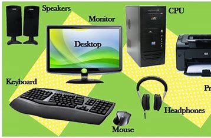
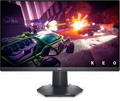
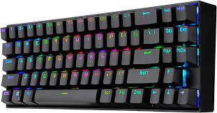
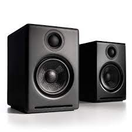

The Important Parts of the Computer
Moniter
CPU
KEYBOARD
MOUCE
Speakers
The optional parts of computer
Webcam
Microphone
Printer
Scanner
Headphone
Moniter

A monitor, also known as a computer screen or display, is an essential peripheral device that plays a crucial role in the world of technology. Serving as the visual interface between users and their computers, monitors offer a window into the digital realm, enabling us to interact with the vast array of information, applications, and content available to us. Monitors come in various sizes, resolutions, and technologies, ranging from the classic cathode ray tube (CRT) monitors of the past to the modern and sleek LCD, LED, and OLED displays of today.
The quality of a monitor greatly influences the overall user experience, with factors like resolution, color accuracy, refresh rate, and response time playing key roles. High-resolution monitors, such as 4K and even 8K displays, deliver stunningly sharp images, making them ideal for content creators, gamers, and professionals working with intricate visual details. Additionally, advancements in refresh rates have led to smoother motion rendering, enhancing the gaming and multimedia experience.
CPU

The Central Processing Unit (CPU), often referred to as the brain of a computer, is a vital component that performs the majority of processing tasks in a computer system. It is responsible for executing instructions, performing calculations, and managing data, thus enabling the computer to carry out a wide range of tasks. The CPU is comprised of several key elements, including the arithmetic logic unit (ALU) responsible for mathematical operations and the control unit that coordinates the flow of data within the CPU and to other parts of the computer.
The performance of a CPU is a critical factor in determining a computer's overall speed and capability. CPUs are designed with multiple cores, allowing them to handle multiple tasks simultaneously through parallel processing. This multi-core architecture has become increasingly prevalent, significantly boosting the efficiency and performance of modern computers. Additionally, advancements in manufacturing processes have led to smaller transistors and greater transistor density, which results in more powerful and energy-efficient CPUs.
CPU speed is often measured in gigahertz (GHz), representing the number of cycles the CPU can execute per second. However, raw clock speed is not the sole indicator of a CPU's performance, as factors such as cache size, architecture, and instruction sets also play a crucial role.
In recent years, CPUs have not only found their way into traditional desktop and laptop computers but have also become integral components in smartphones, tablets, gaming consoles, and other embedded devices. As technology continues to progress, CPUs will likely continue to evolve, providing even more computing power and efficiency to meet the demands of an ever-expanding range of applications and services.
KEYBOARD

A keyboard is an indispensable input device that allows users to communicate with computers and other electronic devices through the entry of text, commands, and various functions. It is one of the primary means of interaction between users and machines, enabling them to type, navigate, and control the software and applications they use. Keyboards come in various designs and layouts, with the most common being the QWERTY layout, named after the first six letters on the top row of keys.
Traditional keyboards consist of alphanumeric keys, a set of function keys, modifier keys (such as Shift, Ctrl, and Alt), and navigation keys (like arrows and a numeric keypad). Over time, keyboards have evolved to include specialized keys, media control buttons, and shortcut keys to streamline productivity and access specific features quickly.
With the advent of technology, traditional mechanical keyboards have been joined by more modern variations, such as membrane keyboards, scissor-switch keyboards, and the increasingly popular mechanical gaming keyboards. Mechanical keyboards, in particular, have gained popularity due to their tactile feedback, durability, and customization options, catering to both typists and gamers alike.
MOUCE

A mouse is a fundamental input device used in computing, playing a pivotal role in navigating graphical user interfaces and interacting with digital content. Shaped to fit comfortably in the hand, a typical mouse consists of two or more buttons and a scrolling wheel, though more advanced models may incorporate additional buttons for specialized functions. By moving the mouse across a flat surface, users can control the position of an on-screen pointer, facilitating precise and intuitive control over various software applications.
The primary function of a mouse is to enable users to perform a wide range of tasks efficiently, such as selecting, clicking, dragging, and dropping items, as well as navigating through menus, websites, and documents. Its role extends beyond traditional desktop computing, with many modern mice designed for gaming, offering enhanced sensitivity, programmable buttons, and customizable features to cater to gamers' specific needs.
Speakers

Speakers are fundamental audio output devices that play a pivotal role in our daily lives, enriching our audio experiences across a wide range of applications. These devices convert electrical signals into sound waves, allowing us to hear music, movies, podcasts, video game audio, and various other forms of digital audio content. Speakers come in diverse forms, from built-in speakers in electronic devices like laptops and smartphones to standalone units with varying sizes and configurations.
Quality speakers can produce rich, clear, and immersive sound, enhancing the overall enjoyment of multimedia content. They are an integral part of home theater systems, providing cinematic audio to complement the visuals on screen. In addition to entertainment, speakers are also vital in business and educational settings, where clear audio is essential for presentations, conferences, and lectures.
Webcam

A webcam, short for "web camera," is a small yet remarkable device that has revolutionized the way we communicate and interact in the digital age. Comprising a camera lens, image sensor, and supporting circuitry, webcams enable users to capture real-time video and transmit it over the internet or local networks. With their widespread integration into laptops, desktop computers, and even smartphones, webcams have become an indispensable tool for video conferencing, online meetings, live streaming, and virtual interactions.
The impact of webcams extends far beyond personal communication, as they play a vital role in various professional fields. They facilitate remote work, enabling seamless collaboration among team members from different locations, thus promoting productivity and efficiency. Moreover, webcams have empowered online education by providing an interactive experience between students and educators, irrespective of geographical barriers.
Microphone
A microphone is a remarkable device that serves as the gateway between the auditory world and technology. Its primary purpose is to capture sound waves and convert them into electrical signals, allowing us to record and amplify sounds for various applications. Whether used in recording studios, live performances, telecommunication systems, or even everyday devices like smartphones, microphones play a vital role in facilitating clear communication and preserving audio content.
There are various types of microphones, each designed to suit specific needs and environments. Condenser microphones, for instance, are known for their sensitivity and accurate reproduction of sound, making them ideal for studio recordings and professional applications. Dynamic microphones, on the other hand, are rugged and versatile, often used on stage or in outdoor settings due to their ability to handle high sound pressure levels.
Printer
A printer is a ubiquitous and indispensable device in the modern world, revolutionizing the way we translate digital information into tangible form. Its primary function is to produce hard copies of documents, images, or graphics stored on electronic devices. The printer operates by transferring ink or toner onto paper, creating precise and high-quality reproductions of the original content. With various types available, including inkjet, laser, and thermal printers, users can choose the one that best suits their needs. Whether for home or office use, printers have become an essential tool for tasks ranging from everyday printing needs to professional-grade outputs. Moreover, advancements in technology have led to the development of wireless and mobile printing options, allowing users to conveniently print from their smartphones and tablets. As printers continue to evolve and integrate with digital systems, they play an integral role in bridging the gap between the virtual and physical realms, ensuring that information can be readily accessible in tangible form.
Headphone
Headphones have become an essential part of modern-day life, revolutionizing the way we experience audio. These sleek, compact devices offer a personal and immersive auditory experience that allows us to escape into the world of music, podcasts, or movies without disturbing those around us. With various styles ranging from over-ear to in-ear, headphones cater to diverse preferences and needs. Cutting-edge technology has elevated the audio quality, delivering crystal-clear sound, deep bass, and crisp highs that bring out the finest nuances in our favorite tracks. Furthermore, noise-cancelling headphones have become increasingly popular, providing a sanctuary amidst the cacophony of the outside world, allowing us to concentrate better and unwind. Whether used during commutes, workouts, or leisurely strolls, headphones have seamlessly integrated into our daily routines, enhancing our auditory experience and elevating our connection to the world of sound.
Scanner
A scanner is a versatile and essential device that has revolutionized the way we interact with both physical and digital content. This ingenious tool allows users to convert physical documents, photographs, and images into electronic data, making them easily accessible and shareable in the digital realm. Scanners utilize a combination of sensors and optical systems to capture detailed representations of the source material, be it text or images. They come in various types, such as flatbed scanners that are perfect for scanning individual pages or photos, sheet-fed scanners ideal for bulk scanning, and even handheld scanners for on-the-go convenience.
The scanned data is then transformed into digital formats, commonly PDFs or image files, preserving the original content's quality and integrity. Beyond document digitization, modern scanners often boast advanced features like optical character recognition (OCR) that enable text recognition, making the scanned documents fully searchable and editable. Additionally, some scanners can capture vibrant colors and sharp resolutions, making them valuable tools for artists and graphic designers who want to preserve their creations in a digital format.